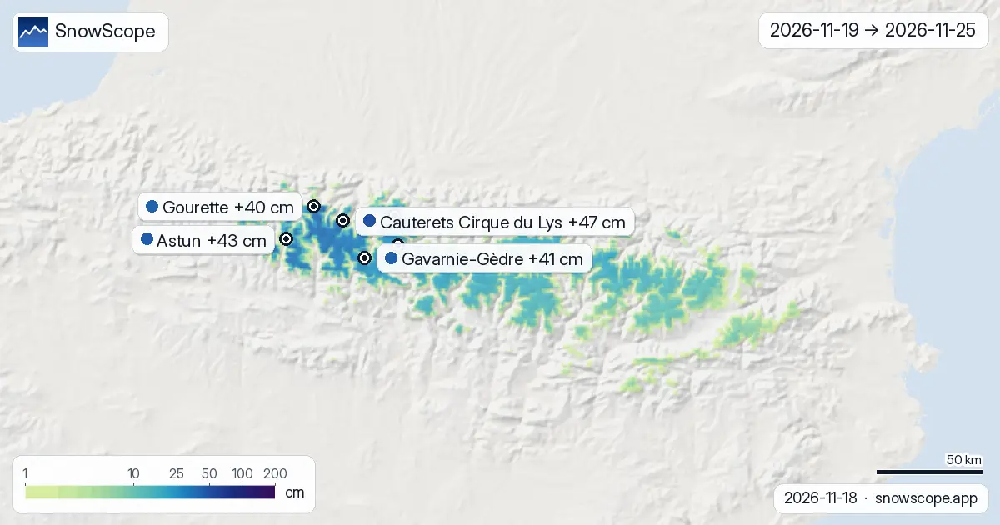
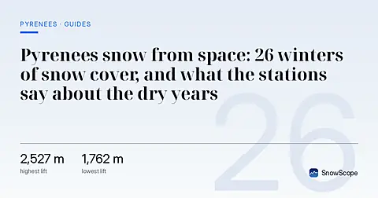

Pyrenees: 63 cm of new snow forecast over two weeks
Our snow model shows the Pyrenees will receive up to 63 cm of new snow over the next 14 days, with the heaviest falls arriving in the first week. Most of this snow will reach heights above 2000 m, where the mountains can retain it through early December.
See the live snow forecast for Cauterets Cirque du Lys in the SnowScope appSnow depth, powder alerts and the 3D map, free.
When and where the snow arrives
The first week (19–25 November) will deliver about 70% of the total snowfall. Thursday 21 November looks like a turning point: 14 resorts are forecast to receive 5 cm or more that day, with Gavarnie-Gèdre leading at 12 cm. The bigger pulse comes on Saturday 22 November, when Gourette may see 17 cm and 20 resorts across the range will get measurable snow.
Week two (26 November to 2 December) will be quieter. A second smaller event around 26 November will bring 5 to 8 cm to scattered resorts, then conditions dry out until early December.
| Resort | Snow depth | New snow, 72 h | Coming, next days | Top |
|---|---|---|---|---|
| Cauterets Cirque du Lys | 3 cm | 1 cm | 10 cm | 2,420 m |
| Astun | 0 cm | 0 cm | 6 cm | 2,272 m |
| Gavarnie-Gèdre | 1 cm | 0 cm | 6 cm | 2,283 m |
| Gourette | 3 cm | 1 cm | 8 cm | 2,453 m |
| Piau-Engaly | 9 cm | 6 cm | 12 cm | 2,527 m |
| Grand Tourmalet | 1 cm | 1 cm | 7 cm | 2,464 m |

Snow depth by height
Height matters strongly in the Pyrenees right now. Above 2500 m, our model predicts a median of 24 cm new snow, with some areas reaching 35 cm. Between 2000 and 2500 m, expect 19 to 28 cm. Below 2000 m, snowfall drops sharply to just 2 to 6 cm, and the lowest peaks (1500–2000 m) will see almost nothing.
Of the entire mountain terrain in the region, about 2300 km² should see 20 cm or more, and roughly 275 km² will reach 50 cm or more. This is early season snow on steep, rocky terrain, so check the official avalanche bulletin before going off-piste.

Resort-by-resort snapshot
Cauterets Cirque du Lys leads this forecast with 47 cm over 14 days, peaking on 22 November with 14 cm. Gourette comes close with 40 cm and an even bigger single day on 22 November (17 cm). Astun and Gavarnie-Gèdre both track around 41–43 cm total. Piau-Engaly, the region's highest base at 1762 m, already holds 9 cm today and will gain 37 cm more, with its best day on 21 November (10 cm).
The forecast carries real uncertainty: the two models we use (ECMWF IFS and NOAA GFS) differ by 20 to 30 cm at some sites. Early-season snow is thin, and rocks may lie just beneath the surface. These are estimates for the slopes mid-mountain at each resort, not the villages.

What this means for skiing
The Pyrenees will see noticeable improvements through late November. By 25 November, the snow-covered area across the range should grow from today's 460 km² to around 750 km² by 21 November. Only 16 of 53 resorts currently hold snow; that number should climb to 20 by late November as the high peaks fill in.
Early-season conditions will still be thin below 2000 m and rocky in exposed terrain. The best skiing will be on north-facing slopes above 2000 m after each snowfall event.
Tips for skiers
- Watch Thursday 21 November and Saturday 22 November as the two key snow days; most resorts will see 5–17 cm across those two dates.
- Prioritise slopes above 2000 m: the model shows little snow below that height, and you may find rocks or thin base.
- Check the official avalanche bulletin if you plan to ski off-piste; early-season snow is unstable and sits on unconsolidated ground.
- Forecasts can shift; these numbers are the average of two models. Check back as the events approach.
- Second week is much quieter. If you can ski the first week, that is when the range will have the best conditions.
About these numbers
Resort snow depths are the deepest snow on the resort's upper slopes from the SnowScope snow model (about 1 km, run of 18 November); they are estimates for an area, not a measurement at one point. Station values are measurements on the date shown. Forecasts can change. Always read the official avalanche bulletin before going off-piste.
Official avalanche bulletins: Météo-France / Meteocat / AEMET
Cite this report
For research, teaching or the press: the numbers and charts are free to reuse under CC BY 4.0 with this citation.
SnowScope (2026), Pyrenees: 63 cm of new snow forecast over two weeks, https://snowscope.app/blog/en/2026/11/pyrenees-2-week-snow-forecast-maps-18-november-2026.html, accessed 2026-11-18
SnowScope (Atlas Labs). (2026, November 18). Pyrenees: 63 cm of new snow forecast over two weeks. SnowScope snow reports. https://snowscope.app/blog/en/2026/11/pyrenees-2-week-snow-forecast-maps-18-november-2026.html
BibTeX
@misc{snowscope2026pyrenees2weeksnowforecas,
author = {{SnowScope (Atlas Labs)}},
title = {Pyrenees: 63 cm of new snow forecast over two weeks},
year = {2026},
month = nov,
howpublished = {\url{https://snowscope.app/blog/en/2026/11/pyrenees-2-week-snow-forecast-maps-18-november-2026.html}},
note = {Published 2026-11-18 12:17 UTC; accessed 2026-11-18}
}· CC BY 4.0 · Methods, data and tools →
Cauterets Cirque du Lys: snow and temperature by height, this winter vs last (tools) →
Follow Cauterets Cirque du Lys
Free: a message when fresh snow is coming, and the forecast every morning.
More snow reports

How long the Pyrenees stayed white each winter since 2000-01, seen by satellite, and snow depth at 10 long-running stations. Three thin winters in a row ended in 2025-26; this autumn has started normally.

Piau-Engaly leads the forecast with 37 cm of new snow by 13 November; 24 cm is expected on 12 November.

Snow-covered area jumped from 560 to 1,710 km² between November 17 and 19. Piau-Engaly holds the deepest snow at 15 cm on upper slopes as of November 19.